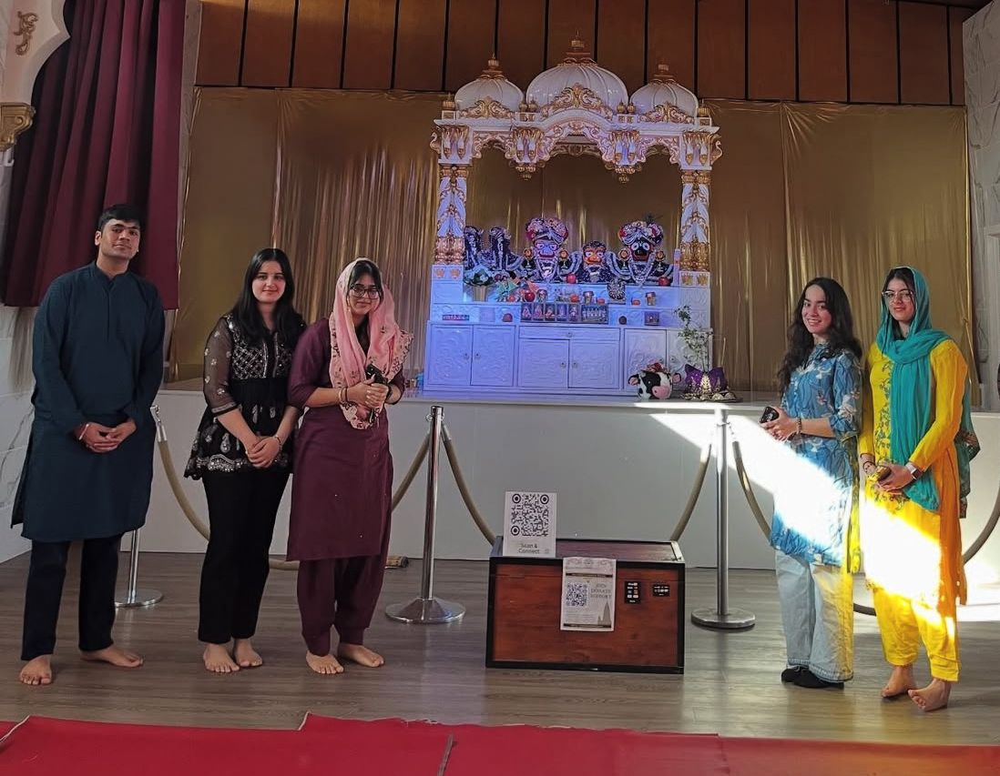
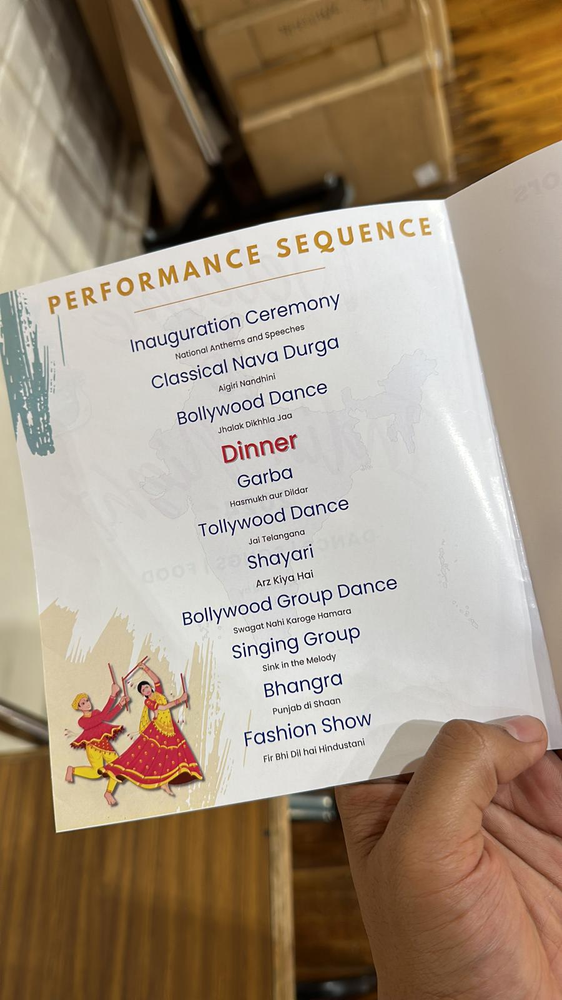

I joined the Hindu Student Council (HSC) at the University of Winnipeg in early 2025 as an External Affairs member—and later helped build its Creative Division. What started as a way to stay connected to my cultural roots quickly became something much more meaningful.
Our team worked hard to plan inclusive, vibrant events for the student community, including cultural showcases, celebrations, and interfaith collaborations. I helped manage outreach, design recruitment messages, and even invite dancers for our new Creative Team.
Through HSC, I realized how student groups can truly shape campus culture. I met so many amazing people—some who shared my background, and others who simply wanted to learn. Working with them taught me how to lead with both passion and professionalism.
Being part of HSC reminded me that leadership isn’t about position—it’s about building something that others can connect to and carry forward.